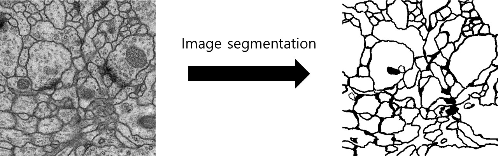

PRACTICE
Extracurricular Activities
Internship at GUGC: Speech-to-Text
On January 2018, we were offered a place for a paid internship program under supervision of Ph.D Mijung Kim
and Prof.Wesley De Neve at GUGC. The main goal of this program was to grasp the very basics of machine learning,
and create a simple Speech-To-Text (STT) module by following instructions in Project DeepSpeech.
For further information, please follow the link below:
https://github.com/ugent-korea/tf-medical-stt
We also created a simple GUI to make the STT module as user-friendly as possible. A python module
called Tkinter was used. The following pictures are the screenshots of the GUI:
Korea Computer Congress 2018
At the beginning of March 2018 semester, we casually figured out that Korea Computer Congress 2018 will be held throughout June 20th to 22nd. Wondering if what we did during the Internship program in January 2018 could be viable for the congress, we searched for the prerequisites for the applicable fields of study. Turned out it was! We wrote a 3-page research paper that discussed the performance and application of speech-to-text in medical fields. Hopefully, our paper received an acceptable score and we were granted an opportunity to attend the congress and explain our paper in person.
As mentioned above, the event was held for 3 days, and we only had to attend the last day (22nd) to present our research. We were in the junior/undergraduate division, so we only had to create a poster that briefly describes the outline of our research and explain it to randomly passing-by judges who show some extent of interest.
Intensed Research at GUGC: Image Segregation
On Summer 2018, GUGC offered students places in program named "Intensed Research", where students work under Ph.D students or Professors for arbitrary periods during the summer holiday. Three of us, the same members from the previous January Internship, were offered to learn under one of the Ph.D students in the department of Biotech Data Science.
Quite similar from the January Internship, we had to deal with machine learning again
(or deep learning). This time, however, the target was the image instead of the text.
The main objective was to apply deep learning algorithms on cell images and eventually
separate out only the borders of the cell.
Refer to the below image for the input and desired result:

For further informations, please visit our repository:
https://github.com/ugent-korea/pytorch-unet-segmentation
Lab reports in GUGC
Labs done in 2nd Bachelor's year